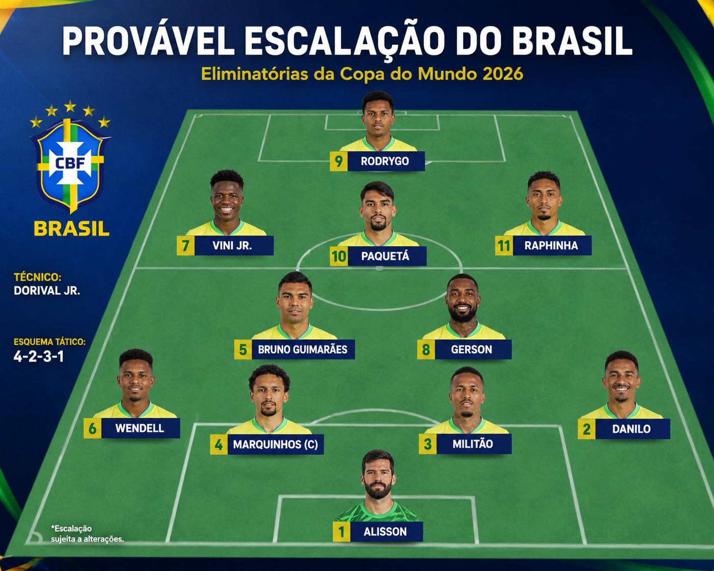

Geramos uma imagem com a ajuda de IA para identificar os possíveis titulares da copa do mundo:
Alisson no gol
Marquinhos e Militão na dupla de zagueiros
Wendel e Danilo como laterais
Bruno Guimarães e Gerson de volantes
Paquetá meio campo
Vinícius Junior e Raphina com pontas
Rodrigo como centro avante